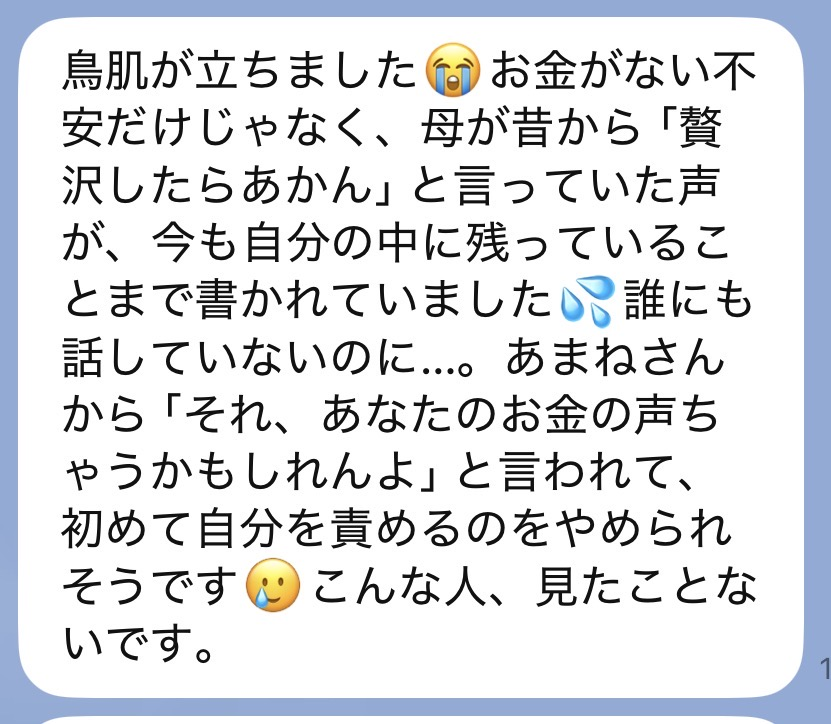
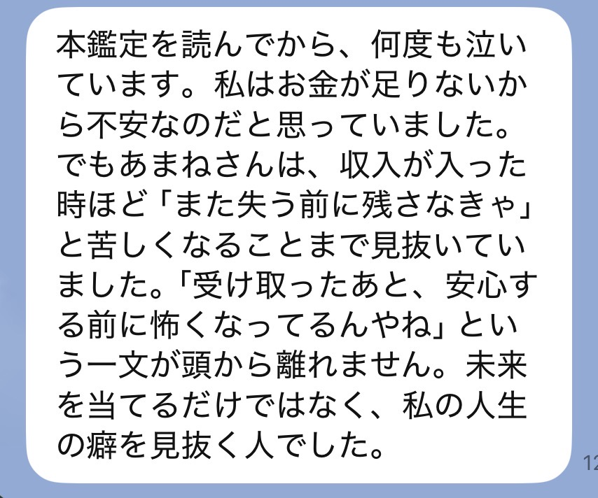
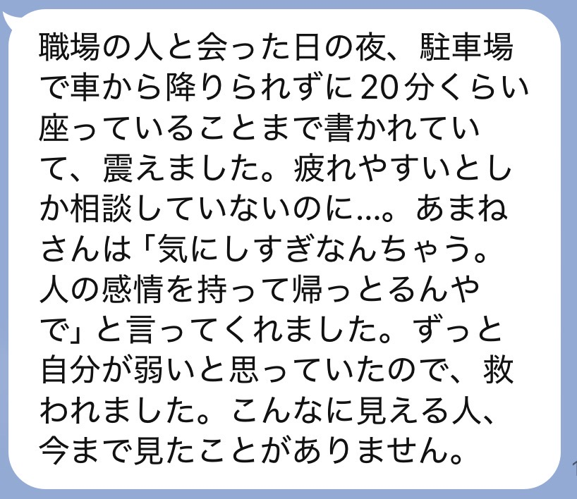
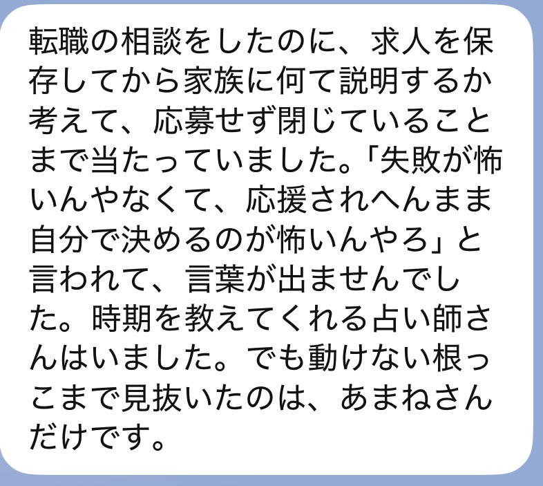
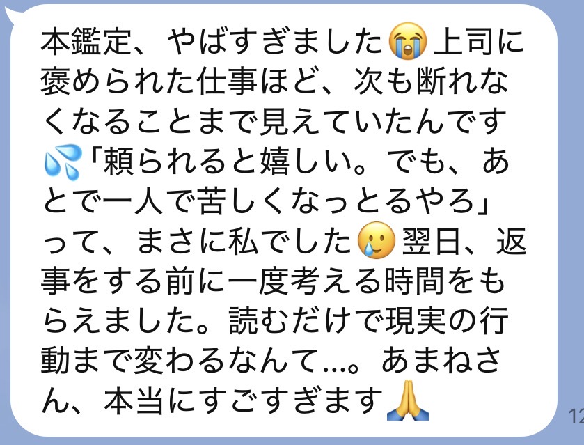
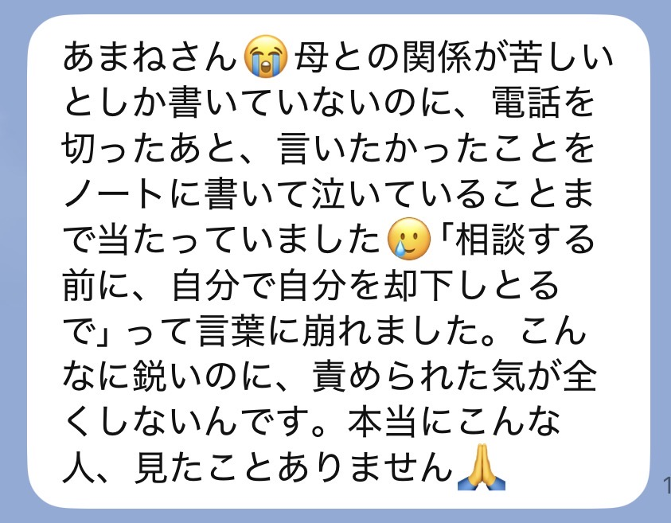
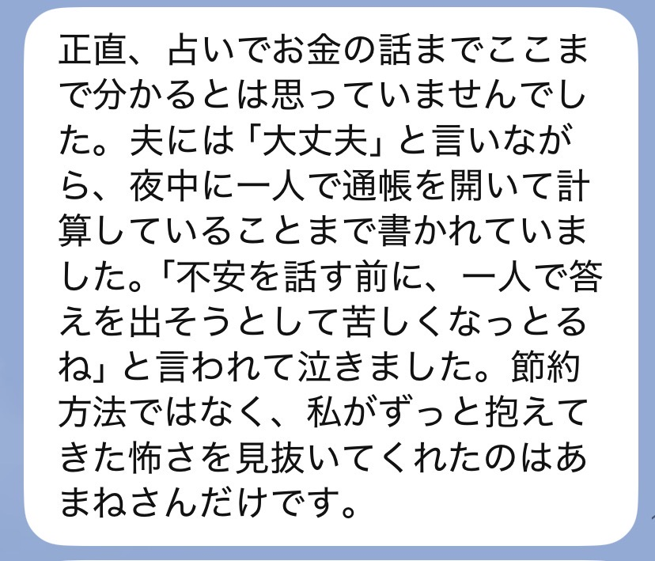

天命降ろしの本鑑定
あの鑑定、
まだ半分しか
言うてへんで
無料鑑定を受け取った方へ
SCROLL
あの無料鑑定、書いたんは私や。
送ってくれた言葉を一つずつ読んで、
名前の響きで身体に来たもんを、そのまま書いた。
読んでる途中、どこかで手ぇ止まらんかった？
「なんで分かんの」って、ちょっとゾッとした。
「あ、それや」って、認めたくないのに認めた。
ほんで少しだけ、泣きそうになった。
手が止まった場所は、
あんたがずっと
一人で我慢してた場所。
ゾッとした場所は、
誰かの念か、古い言葉が
刺さったままの場所や。
「怖いけど、分かる」と思ったとこ。
そこはもう、あんたが自分を守り始めてる証拠やで。
先に言うとくな。
私は「ほら当たったやろ、すごいやろ」がしたいんちゃう。
怖いこと言うて、言うこと聞かせたいんでもない。
私が届けたいんは、あんたを守るための本当のことや。

15,000人以上視てきて、
優しい人ほど、みんな同じこと言うねん。
「私が弱いから、狙われる」
「私が気にしすぎなだけ」
「私さえ我慢すれば」
あんたは弱いんちゃう。
反応してくれそうな優しい人やから、寄ってこられてるだけや。
守り方を、誰にも教えてもらえへんかっただけやねん。
無料鑑定で伝えたんは、今あんたに何が刺さってるか。そこまでや。
それだけでも、肩が軽なった人は多い。
でもな、正直に言うで。
「軽なったのに、なんでまた戻んねん」
そう思った日、あったやろ。
当たってた。
肩が軽なった。
ちょっと泣いた。
そこで終わったら、三日後、また同じ人に、同じ顔で振り回されてる。
刺さってる念を見つけただけで、刺さる仕組みはまだ変わってへんからや。
無料鑑定は、
「刺さってるで」と教えるもん。
本鑑定は、
抜き方と、二度と刺されへん
守り方を渡すもんや。
「またお金使って、何も変わらんかったらどうしよ」
うん、その気持ちは正しい。
お金払ってまで視てもらうんは、ちょっと怖いもんな。

それな、弱いからちゃうで。
何回も期待して、何回も自分を責めてきたからや。
急かさへん。
ただ、せっかく見つかった「刺さってる場所」を、
また日常に埋めてほしくないだけやねん。
どっち選んでも、
一人ずつ、ちゃんと視る。
違うんは、どこまで深く降ろすかや。

今の流れ、相手との距離感、近い未来。
動く時期と待つ時期、何から整えたらええか。
まず今のしんどさを、軽くしたい人へ。
星詠みの章を受け取る限定料金 4,980円今起きてることだけやなく、なんであんたがそれを引き寄せるんかを、魂の深いとこから視る。
同じ場所で何回もつまずいてる自覚がある人は、こっちの方がすっきり整理できる流れが出てるで。
天命降ろしを受け取る限定料金 9,980円鑑定は、一人ずつ
視て、書いてる。
せやから、お受けできる数に
限りがあるねん。
今の状況を、そのままLINEに送って。
どっちが合うか、私が返すわ。
お名前（決済者名）、選んだ鑑定名、購入画面のスクショをLINEに送って。ここで一回、私が確認する。
ここが一番大事なとこや。
今いちばんしんどい瞬間。認めたくなかったこと。夜にふっと出てくる気持ち。
上手に書かんでええ。思いついたまま送ってな。
もらった言葉を一つずつ受け取って、名前の響きで身体に来るもんを読む。
ここに時間かけたいから、二〜三日もらうで。
読み終わったあとも置いておける長さで書く。何回でも読み返してな。
届いたLINEを、そのまま載せとくな。







今、生活がしんどくて、このお金を出すために何かを削らなあかん人。
今回は、見送ってな。
暮らしを削ってまで受けるもんちゃう。
無料鑑定で伝えたことを、何回でも読み返して。あれは本当のことや。
状況が変わった時に、また来たらええ。
その時、私はここにおるから。

私も昔、この力のせいでいじめられてた。
相手の寂しさまで視えてしもて、それでも傷ついた。
誰にも言えんと泣いてた時、神社の鈴の音だけがやけにはっきり聞こえてな。
「視えるんやったら、責めるためやなく、守るために使い」
そう受け取ったんが、私の原点や。
せやから私の鑑定は、当てるより守る。
怖がらせたいんちゃう。これ以上あんたが自分を責めんでええように、本当のことを言うてる。
無料鑑定でも手ぇ抜いてへん。
ほんで、そこで視えたもんの奥が、まだ残ってる。